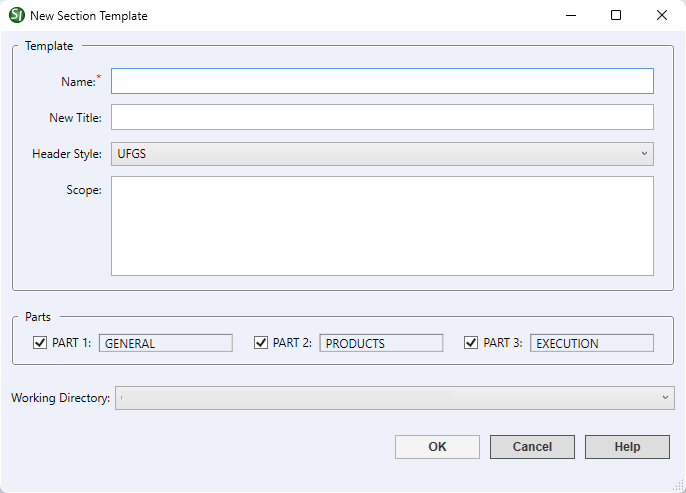

This command can only be executed from the SpecsIntact Explorer's Section Templates menu.
The New button allows the creation of new Section Template(s), which function as a guideline for developing a unique template for a local MasterA Master that is specific to a District, Region, or AE Firm that contains unique Sections that cannot be found in the Unified Facilities Guide Specifications (UFGS) Master that is specific to a District, Region, Center, or AE Firm.
 The most efficient method for developing a Section Template tailored to your organization's specific local Master is to begin by copying the existing UFGS Section Template. This approach takes advantage of a pre-defined and standardized foundation, saving significant time compared to creating a new template from scratch.
The most efficient method for developing a Section Template tailored to your organization's specific local Master is to begin by copying the existing UFGS Section Template. This approach takes advantage of a pre-defined and standardized foundation, saving significant time compared to creating a new template from scratch.
A red asterisk (*) next to a field signifies that the information must be provided.

- Name - Identifies the template in the SpecsIntact Explorer and Windows File Explorer and may contain up to 50 letters and numbers with no special characters.
- New Title - Provides additional descriptive context and is a companion to the new Name. It is limited to 64 characters and should be entered in either uppercase or title case.
- Header Style - Uses the current UFGS header, or you can select a different one from the drop-down list.
- Scope - Defines the purpose or content of the Section. This definition is incorporated into the template's General NoteOutlines specific agency requirements pertaining to Job creation and submission and surrounded by a set of SCP tags.
- Parts - Allows the structuring of the Section Template with the three PART format, but at least one PART is required.
- Working Directory - Provides the option to leave the default Working Directory or select a different one from the drop-down list. When the templates are relocated outside the default Working Directory, the folder location will be displayed instead.
Standard Windows Commands
 The OK button will execute and save the selections made.
The OK button will execute and save the selections made.
 The Cancel button will close the window without recording any selections or changes entered.
The Cancel button will close the window without recording any selections or changes entered.
 The Help button will open the Help Topic for this window.
The Help button will open the Help Topic for this window.
How To Use This Feature
 To create a New Section Template:
To create a New Section Template:
- In the SpecsIntact Explorer, select the Tools menu and select Section Templates
- In the Section Templates window, click New
- In the New Section Template window, enter a new name
- In the New Title field, enter a new title
- In the Header Style, perform one of the following:
- Use the current UFGS header
- Select the drop-down arrow and select [none]
- In the Scope, enter a brief description of the Section requirements in the field
- Below Parts, select the Parts to be included in this Section
- In the Working Directory, perform one of the following:
- Use the current Working Directory
- Select the drop-down arrow and select a different Working Directory
- Click OK
Users are encouraged to visit the SpecsIntact Website's Support & Help Center for access to all of our User Tools, including Web-Based Help (containing Troubleshooting, Frequently Asked Questions (FAQs), Technical Notes, and Known Problems), eLearning Modules (video tutorials), and printable Guides.